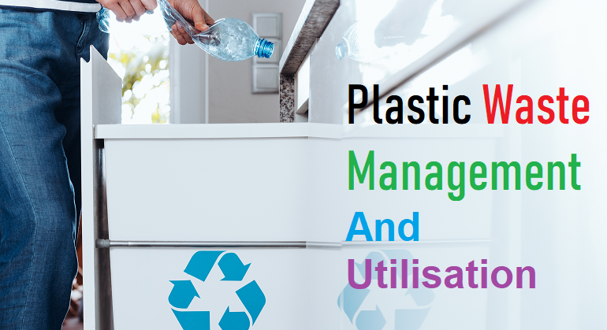

E Plastic management system is a website where we are use to recycle the waste plastic. It is very
helpful in order to overcome the wastage issues of the
plastics. The user can able to view the list of plastic
categories based on their shapes they can choose any of it.
The admin used to maintain all the records. Admin also
can view the users details add details of product and can
also able to update the changes in the details. The
management and recycling of E plastic waste is rapidly
growing as it is a valuable resource of industries and it is
very substances and with low recycling rate. The
Utilization of e plastic waste materials is a partial solution
to environmental and ecological problems. As the use of E
plastic waste will reduces the Aggregate cost and provides
a good strength for the structures and roads. It will reduces
the landfill cost and it is energy saving. The e plastic waste
consists of discarded plastic waste; these plastics are nonbiodegradable components of E plastic waste as a partial
replacement of the coarse or fine aggregates. Plastic
pollution is generated by the unsustainable use and
disposal of plastic products in modern society, threatening
economies, ecosystems, and human health. Current cleanup strategies have attempted to mitigate the negative
effects of plastic pollution but are unable to compete with
increasing quantities of plastic entering the environment.
Thus, reducing inputs of plastic to the environment must
be prioritized through a global multidisciplinary approach.
Mismanaged waste is a major land-based source of plastic
pollution that can be reduced through improvements in the
life-cycle of plastics, especially in production,
consumption, and disposal, through an Integrated Waste
Management System.
E Plastic management system is a website where we are use to recycle the waste plastic. It is very helpful in order to overcome the wastage issues of the plastics. The user can able to view the list of plastic categories based on their shapes they can choose any of it. The admin used to maintain all the records. Admin also can view the users details add details of product and can also able to update the changes in the details. The management and recycling of E plastic waste is rapidly growing as it is a valuable resource of industries and it is very substances and with low recycling rate. The Utilization of e plastic waste materials is a partial solution to environmental and ecological problems. As the use of E plastic waste will reduces the Aggregate cost and provides a good strength for the structures and roads. It will reduces the landfill cost and it is energy saving. The e plastic waste consists of discarded plastic waste; these plastics are nonbiodegradable components of E plastic waste as a partial replacement of the coarse or fine aggregates. Plastic pollution is generated by the unsustainable use and disposal of plastic products in modern society, threatening economies, ecosystems, and human health. Current cleanup strategies have attempted to mitigate the negative effects of plastic pollution but are unable to compete with increasing quantities of plastic entering the environment. Thus, reducing inputs of plastic to the environment must be prioritized through a global multidisciplinary approach. Mismanaged waste is a major land-based source of plastic pollution that can be reduced through improvements in the life-cycle of plastics, especially in production, consumption, and disposal, through an Integrated Waste Management System.
Categories of Plastics

PET
Polyethylene Terephthalate
Polyethylene terephthalate, is the most common thermoplastic polymer resin of the polyester family and is used in fibres for clothing, containers for liquids and foods, and thermoforming for manufacturing, and in combination with glass fibre for engineering resins.

PE-HD
Polyethylene - High density
High-density polyethylene or polyethylene high-density is a thermoplastic polymer produced from the monomer ethylene. It is sometimes called "alkathene" or "polythene" when used for HDPE pipes.

PVC
Poly-vinyl Chloride
Economical, versatile polyvinyl chloride (PVC, or vinyl) is used in a variety of applications in the building and construction, health care, electronics, automobile and other sectors, in products ranging from piping and siding, blood bags and tubing, to wire and cable insulation, windshield system components and more.

PE-LD
Polyethylene - low density
Low-density polyethylene is a thermoplastic made from the monomer ethylene. It was the first grade of polyethylene, produced in 1933 by Imperial Chemical Industries using a high pressure process via free radical polymerization. Its manufacture employs the same method today.

PP
Polypropylene
polypropylene, a synthetic resin built up by the polymerization of propylene. One of the important family of polyolefin resins, polypropylene is molded or extruded into many plastic products in which toughness, flexibility, light weight, and heat resistance are required.

PS
Polystyrene
Polystyrene (PS) is a polymer made from the monomer styrene, a liquid hydrocarbon that is commercially manufactured from petroleum. At room temperature, PS is normally a solid thermoplastic but can be melted at higher temperature for moulding or extrusion, then resolidified.

O
Bisphinol and Others
Bisphenol A is a chemical compound primarily used in the manufacturing of various plastics. It is a colourless solid which is soluble in most common organic solvents, but has very poor solubility in water.